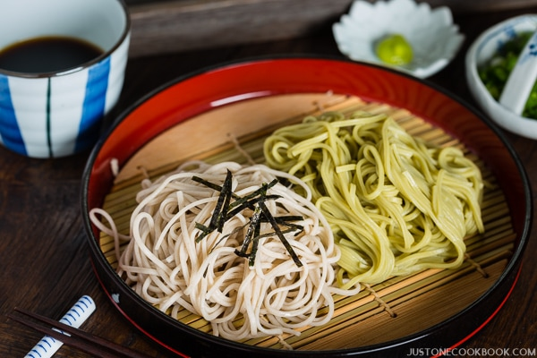

Tenzaru Soba

A buckwheat noodle meal enjoyed on cool summer evenings
Ingredients
- 1/2 cup mentsuyu dipping sauce
- chopped green onions
- chopped daikon
- wasabi
- 5 to 6 pieces tempura vegetables
- 2 to 3 pieces tempura shrimp
- 8 ounces soba uckwheat noodles
Steps
- Prepare the mentsuyu dipping sauce,
then let chill in the refrigerator for 30 min
- Slice green onions and grate daikon
- Boil noodles for 3 minutes, then quickly cool in an ice
bath; Strain afterwards
- Fry vegetable and shrimp tempura, then set aside
- Plate soba noodles and garnish with green onions,daikon, and wasabi;
Set tempura on separate dishplate and serve with the dipping sauce